Uma imagem pode revelar aspectos importantes da vida de uma instituição. Ela retrata as pessoas, o ambiente, a ação momentânea, o figurino utilizado; um sem número de informações. A comparação entre imagens obtidas em ângulos distintos contextualiza o lugar e a observação de imagens com datas diferentes revela a evolução. Juntando várias imagens com os comentários pertinentes, forma-se uma história consistente. Assim sendo, selecionamos algumas fotos que documentam momentos de muito significado para a vida da Associação dos Empregados do SENAI - AES e para seus associados.
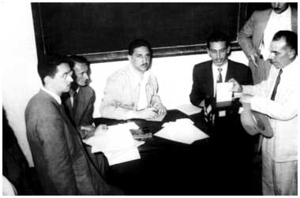
A mesa receptora de votos na primeira eleição da AES, em 21/11/47. No centro da foto estão os professores Luiz Gonzaga Marcondes Nitsch e Luiz Gonzaga Ferreira. Esta eleição ocorreu durante a Assembleia de Fundação da Associação dos Empregados do SENAI - AES e elegeu a 1ª Diretoria da Associação. 411 Memória SENAI
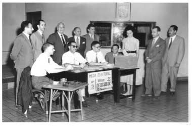
Eleição para a Diretoria da AES - 1956 Foto da 2ª Mesa Eleitoral. Em pé: 1-?, 2-Edemar Pires Meyer, 3- Armando de Virgilis, 4- Elpídio Barbosa, 5- Antonio José de Campos, 6- ?, 7- Oswaldo de Barros Santos, 8- João Batista D'Avila; sentados: 1- Orlando de Toledo Lara, 2- Térbio de Mattos, 3- Walter Sattin, 4- Conrado Agarelli 28/2/1956. 3109 AES
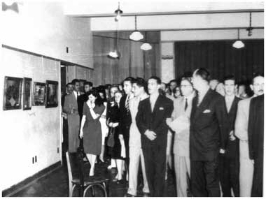
Primeira Exposição de Artes Plásticas da AES - 1948. Em janeiro de 1948, dada a grande repercussão, a 1ª Exposição de Arte promovida pela AES foi reaberta a pedido do Diretor Regional "a fim de que, tendo mostrado desejos de vê-la, S. Exa. o Ministro do Trabalho em visita a São Paulo, tivesse a oportunidade de apreciar os trabalhos expostos." O Ministro do Trabalho Morvan Dias de Figueiredo aparece no centro da foto (terno claro e óculos). Esta foto ilustrou a página 3 do encarte, de comemoração dos 50 anos da AES, que acompanhou o Informativo AES de novembro de 1997. 3133 AES
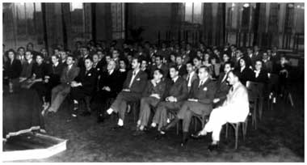
Aula inaugural em 16/08/48 referente ao convênio celebrado com a União Cultural Brasil-Estados Unidos para a realização de um Curso de Inglês aos associados da AES. 520 Memória SENAI
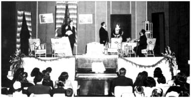
Apresentação do Grupo de Teatro da AES no 10º aniversário do SENAI. Apresentação da peça "O Barão de Cotia"; em 26/09/52. 1613 Memória SENAI
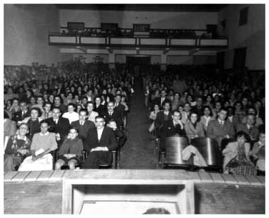
Grupo de Teatro da AES e a peça "Os Transviados" em Taubaté SP. Vista da Platéia durante a apresentação em 12/7/1953. 3197 AES
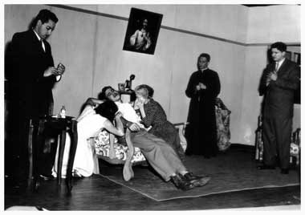
Grupo de Teatro da AES e a peça "Os Transviados" em São Paulo SP. Apresentação no Auditório da Escola SENAI "Roberto Simonsen" em 1953. 3199 AES
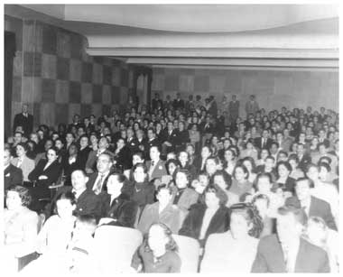
Grupo de Teatro da AES e a peça "Os Transviados" em São Paulo SP. Vista da Platéia durante a apresentação no Auditório da Escola SENAI "Roberto Simonsen" em 1953. 3201 AES
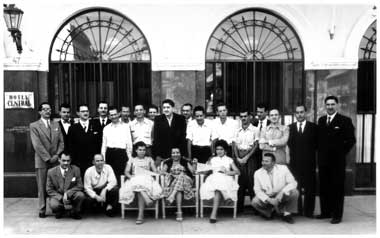
Grupo de Teatro da AES e a peça "Os Transviados" em Itu SP. Os integrantes do Grupo de Teatro da AES em pose em frente ao Hotel Central de Itu em 27/09/1953. 3194 AES
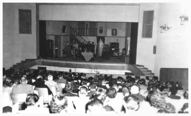
Grupo de Teatro da AES e a peça "Arsênico e Alfazema". 1ª Apresentação no Teatro João Caetano e 2ª Apresentação no Teatro Leopoldo Froes. 1954. 3206 AES
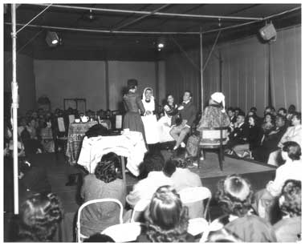
Grupo de Teatro da AES e a peça "Paraísos Conjugais". Pequeno Teatro Popular (Teatro de Arena) 1955. 3209 AES
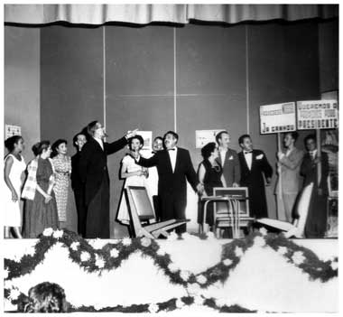
Grupo de Teatro da AES e a peça "O Secretário de Sua Excelência, o Futuro Presidente". Apresentação no Auditório da Escola SENAI "Roberto Simonsen" em 1957. Observe essa cena: nela aparecem 13 atores e há dois centros de ação; com certeza foi um dos momentos altos da peça. 3213 AES
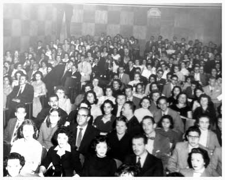
Grupo de Teatro da AES e a peça "O Secretário de Sua Excelência, o Futuro Presidente". Vista da platéia durante a apresentação no Auditório da Escola SENAI "Roberto Simonsen" em 1957. 3217 AES
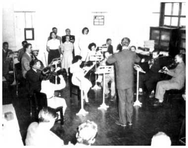
Primeira apresentação da Orquestra da AES (05/09/49) em homenagem aos bolsistas da Escola SENAI "Roberto Simonsen" recém-chegados da França. 727 Memória SENAI
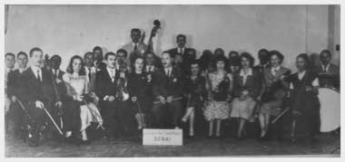
Orquestra Sinfônica da AES integrada exclusivamente por associados - 1949. No centro da foto aparece o organizador da Orquestra professor Ary Vieira de Albuquerque. Esta foto ilustrou a 1ª página do Boletim da AES nº 13 (de julho de 1949). (foto de foto). 3143 AES
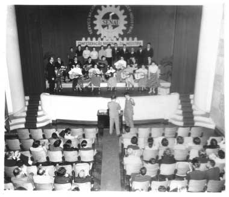
Conjunto de Violões e Coral da AES - 1956 - Em apresentação no Auditório da Escola SENAI "Roberto Simonsen". 3145 AES
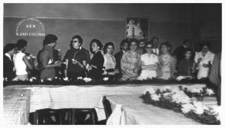
10º aniversário de fundação da AES - 1957. Observe a placa alusiva ao X Aniversário da AES afixada na parede. 3149 AES
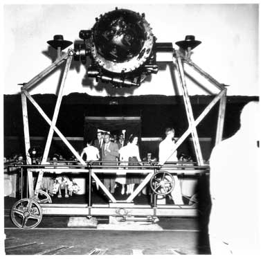
Visita ao Planetário da Cidade de São Paulo. Vista do Equipamento de Projeção. set/1958. 3187 AES
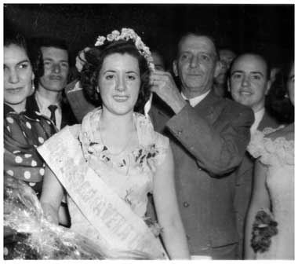
Concurso Rainha da Primavera da AES - 1950 - Nilda Borges Furquim sendo coroada Rainha da Primavera da AES de 1950 Pelo Diretor Regional do SENAI Eng. Roberto Mange. Nessa mesma data do Baile da Primavera foi inaugurada a 1ª Sede Social da AES conforme noticiava o Boletim da AES nº 24 de outubro de 1950. 23/9/1950. 3171 AES
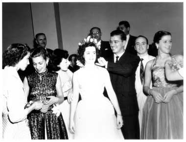
Concurso Rainha da Primavera da AES - 1951 - Nilda Furquim reeleita, sendo coroada Rainha da Primavera da AES de 1951. 3177 AES
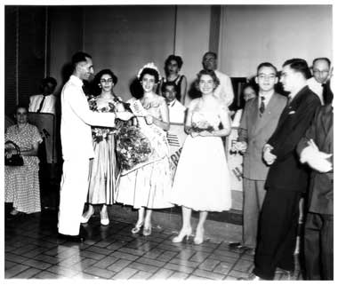
Concurso Rainha da Primavera da AES - 1954 - Marina Nogueira, reeleita Rainha da Primavera da AES de 1954 recebendo a homenagem do Sr. Edemar Pires Meyer Presidente da Diretoria da AES. 3174 AES
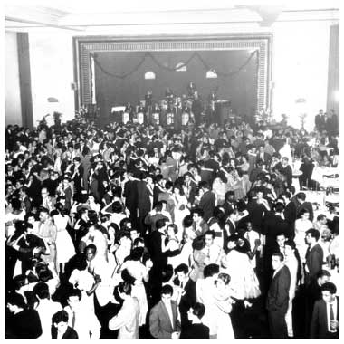
Concurso Rainha da Primavera da AES - 1957 e Baile da Primavera da AES 1957. 3170 AES
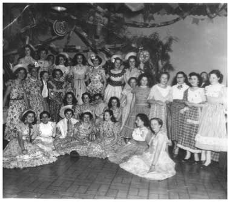
Festa Caipira - 1952 - As moças em pose para a foto. 3246 AES
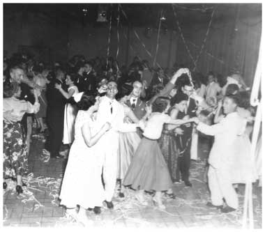
Festa de Fim de Ano - 1952 - Pessoal dançando. 3242 AES
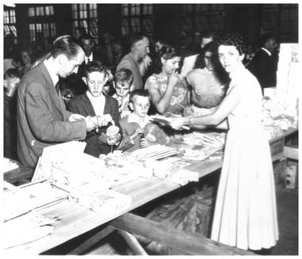
Festa de Natal dos filhos de associados - 1952 - Entrega dos presentes. 3219 AES
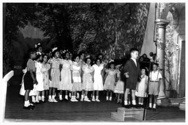
Festa de Natal dos filhos de associados - 1952 - Apresentação de crianças no palco. 3220 AES
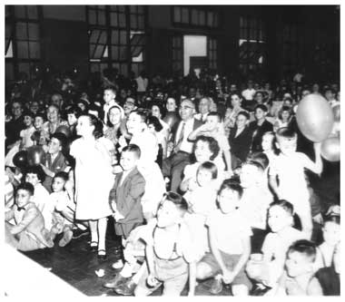
Festa de Natal dos filhos de associados - 1956 - Pessoal na platéia rindo. 3227 AES
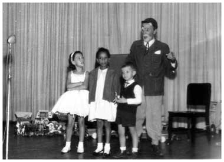
Festa de Natal dos filhos de associados. O Palhaço Fuzarca com crianças no palco. O menino que aparece na foto é o Edson, filho do associado Onésimo Ribeiro. 21/12/1963. 3229B AES
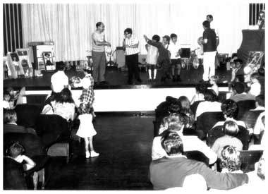
Festa de Natal dos filhos de associados. O Palhaço Fuzarca atuando com as crianças. 24/12/1967. 3232 AES
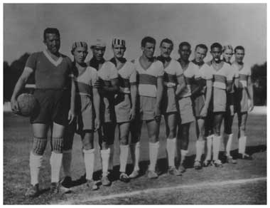
Time de Futebol - 1948 - Equipe de Futebol da AES, perfilada para a foto, momentos antes da partida que terminou empatada em 1X1 contra o Clube de Regatas Nitro-Química. Esta foto ilustrou a 1ª página do Boletim da AES nº 7 (de julho de 1948) (foto de foto) 10/6/1948. Observe o uniforme da equipe da AES; ele foi objeto de doação, conforme noticiou o Boletim da AES nº 2 (de fevereiro de 1948): "De camisa listada..." Assim serão os futuros jogos da "AES Futebol Clube". Um grupo de instrutores, encabeçados pelo Sr. Antonio Gonçalves Leite Neto, ofertaram ao Departamento Esportivo uma coleção de camisas para futebol. Estão engalanados os "craques" do esporte-rei, isto graças à boa vontade e desprendimento dessa turma, sócios a quem a AES consigna votos de louvor e de agradecimentos. 3294 AES
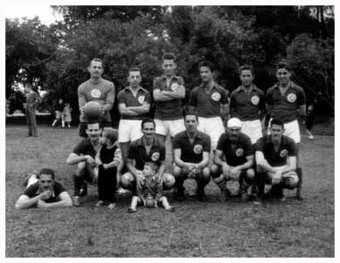
Equipe de Futebol da AES - 1952 - Equipe da AES perfilada para a foto. Em pé: 1- o goleiro Ferdinando Aprobato 3- Toninho da Escola de Artes Gráficas, 5- Nicanor Majado, 6- Milton Costa; Agachados: 7- Orlando Rolandi (deitado), 8- Belmiro da Gráfica, 9- Milton Barros Castilho, 10- Otávio Ramos Prado e 12- Walter Sattin. 3295A AES
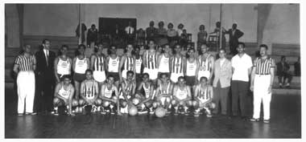
Bolsistas Latino-Americanos em sua despedida. Equipe de Basquete dos Bolsistas X Equipe de Basquete da AES - 01/12/1952 - O mais alto no centro é o Newton Hucke enquanto Edemar Pires Meyer aparece de terno à esquerda da foto. 3301 AES
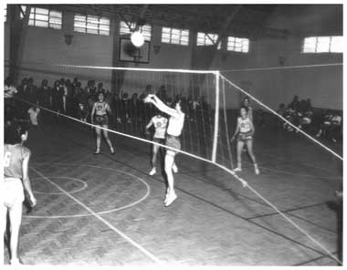
Torneio de Voleibol Rhodia/SENAI - 1956 - Equipe feminina da AES no ataque. 3296 AES
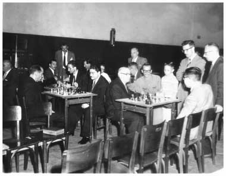
22º Torneio de Xadrez - 1956 - Enxadristas da AES em ação. 3297 AES
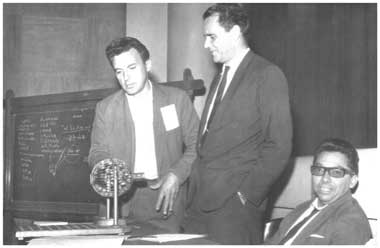
Consórcio do Carro Próprio 1º Grupo; 1ª Assembléia - Sorteio 03/8/1966. Vale lembrar que o Consórcio do Carro Próprio da AES entregou mais de 180 veículos durante as gestões do colega Newton Hucke na Presidência da AES. 3267 AES
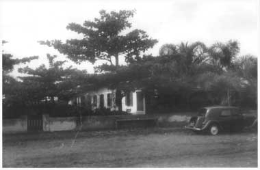
Rancho Camboriú 1962. Tomada de posse da propriedade para instalação da Colônia de Férias da AES. Observa-se o Citroen da Diretoria Regional do SENAI utilizado pelos Diretores da AES e do SENAI. A escritura referente à aquisição do "Rancho Camboriú" pela AES foi lavrada em 24/05/1962. 3000 AES
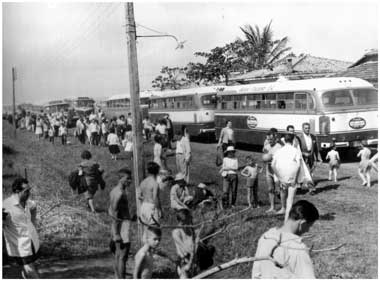
Piquenique promovido pela AES, em Itanhaém, em Comemoração ao 20º aniversário do SENAI - 1962 - Chegada na Colônia em Itanhaém. 01/9/1962. 3019 AES
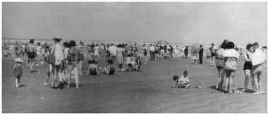
Piquenique promovido pela AES, em Itanhaém, em Comemoração ao 20º aniversário do SENAI - 1962 - Pessoal na Praia em Itanhaém. 01/9/1962. 3020 AES
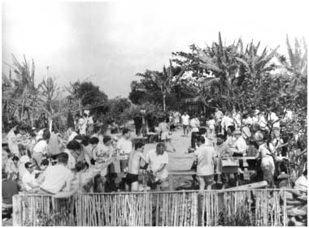
Piquenique promovido pela AES, em Itanhaém, em Comemoração ao 20º aniversário do SENAI - 1962 - Pessoal na Colônia - Esta foto ilustrou a página 8 do Boletim "Informativo SENAI" nº 198 (de outubro de 1962). 01/9/1962. 3024 AES
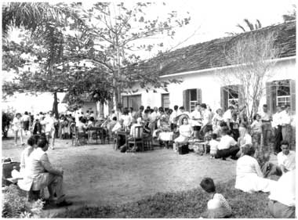
Piquenique promovido pela AES, em Itanhaém, em Comemoração ao 20º aniversário do SENAI - 1962 - Pessoal na Colônia. 01/9/1962. 3029 AES
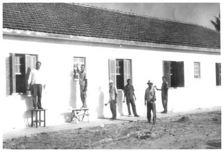
Fachada da Colônia de Férias em Itanhaém - 1963 Obras na fachada da Colônia de Férias. Esta foto ilustrou o boletim AES Informa edição de nº 48. 3042 AES
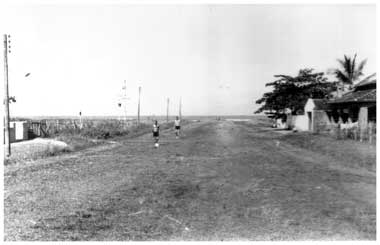
Arredores da Colônia de Férias e praia. Pessoal retornando da praia 1963. 3043 AES
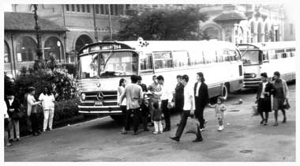
Apresentação da Colônia de Férias - 1964. Encontro para embarque no Parque D. Pedro II em São Paulo em frente ao Palácio das Indústrias. 3054 AES
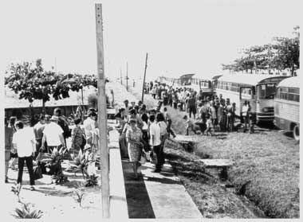
Apresentação da Colônia de Férias - 1964 Desembarque em frente à Colônia de Férias. 3064 AES
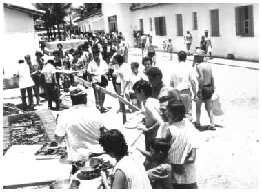
Apresentação da Colônia de Férias - 1964 Pessoal na Colônia de Férias. 3081 AES
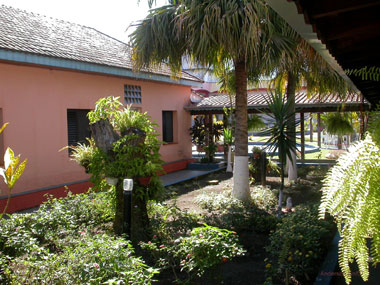
Colônia de Férias da AES - Itanhaém jul/2007. Jardim interno visto do corredor ao lado da Secretaria. AES
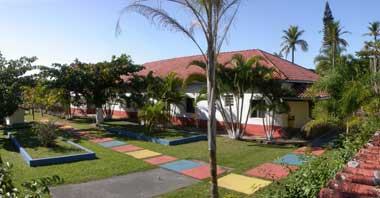
Colônia de Férias da AES - Itanhaém jul/2007. Jardim externo na face norte da Colônia. AES
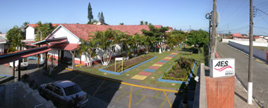
Colônia de Férias da AES - Itanhaém jul/2007. Jardim externo visto do alto da Portaria da Colônia. AES
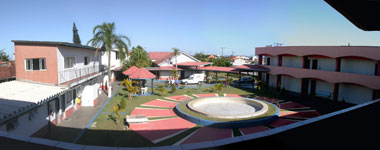
Colônia de Férias da AES - Itanhaém jul/2007. Pátio visto do fundo da Colônia. AES
Colônia de Férias da AES - Itanhaém set/2011. Vista do pátio após a construção dos apartamentos do 3º pavimento. AES
Colônia de Férias da AES - Itanhaém 25/fev/2012. Inauguração da piscina na Colônia. AES
Colônia de Férias da AES - Itanhaém fev/2012. Vista da piscina e vestiários. AES
Colônia de Férias da AES - Itanhaém fev/2012. Pintura na fachada representando o quadro em relevo que havia na antiga entrada da Colônia. AES
Colônia de Férias da AES - Itanhaém ago/2015. Cozinha Industrial completamente adaptada aos padrões do Centro de Vigilância Sanitária. De suas instalações constam: Vestiários exclusivos para os funcionários da Cozinha, Recebimento de produtos, Despensa, Preparo e Cocção, Lavagem de louças e Atendimento. A Cozinha passou a contar com Nutricionista (Responsável Técnico Habilitado) que implantou os POP's (procedimentos operacionais padronizados) que incluem: higiene do pessoal, dos utensílios e dos alimentos; recebimento e pré-preparo de produtos; rotulagem e acondicionamento, coleta e guarda de amostras de alimentos servidos; etc. AES
Colônia de Férias da AES - Itanhaém jul/2007. Vista a partir da esquina da Rua Minas Gerais e Avenida Padre Manuel da Nóbrega. AES
Colônia de Férias da AES - Itanhaém 07/06/2014. Inauguração do Museu AES, exposição que reúne materiais de interesse histórico sobre a AES como fotos, bandeiras, documentos e publicações. Do conjunto faz parte também um recurso informatizado que permite navegar por diferentes temas sobre a Associação. AES
Colônia de Férias da AES - Itanhaém 07/jun/2014. Inauguração do Ginásio de Esportes da AES com quadra poliesportiva, da Cancha de Bocha e do Estacionamento anexos à Colônia de Férias em Itanhaém. O evento contou com a participação dos Dirigentes e Representantes da AES e foi prestigiado pela presença do Diretor Regional do SENAI SP, Professor Walter Vicioni Gonçalves. AES
Colônia de Férias da AES - Itanhaém. Vista aérea da Colônia. Observa-se: o Ginásio de Esportes; o Estacionamento; o Jardim Externo; as Piscinas; os Vestiários; o Restaurante; os Apartamentos Antigos; a Secretaria; o Jardim Circular; os Apartamentos 101 a 311; a Área da Churrasqueira; a Lanchonete; o Museu AES; a Sala de Vídeo e de Jogos; o Lactário; a Oficina de Manutenção; a área de varais e o terreno da Rua Acre adquirido pela AES em agosto de 2014. A Portaria da Colônia localiza-se na Rua Minas Gerais, 1.285 Cibratel II e as coordenadas do portão de entrada da Colônia são: latitude 24º 12' 28,66'' S e longitude 46º 50' 1,38'' O. Foto GOOGLE EARTH de 02/mai/2015
Colônia de Férias da AES - Itanhaém. A Colônia de Férias tem sediado a tradicional Reunião de Representantes da AES. Nesses encontros além dos aspectos operacionais são discutidos temas de interesse dos Representantes. Em junho/2014 (imagem superior) foi trabalhado o tema “Qual é a Tua Obra”, tendo como base o livro de mesmo nome de autoria de Mário Sérgio Cortella. No encontro de fevereiro/2013 (imagem inferior) o destaque ficou por conta da palestra ”Desenvolvimento da Competência Emocional” proferida pelo Sr. Ricardo Bustamante Gonzales – Gerente do Departamento de Marketing e Treinamento da Mitutoyo. AES
22º FARAES - Festival de Atividades Recreativas da AES. Os jogos finais das quatro modalidades deste torneio foram realizados na Colônia de Férias da AES em Itanhaém e contaram com a presença de 130 pessoas. AES
Clube de Campo da AES - Jundiaí. Obras de terraplenagem 1983/84. Observa-se os dois lagos e, no alto da foto, o caminho que hoje leva aos Chalés e ao Centro de Convivência. AES
Clube de Campo da AES - Jundiaí. O mesmo local da foto anterior, porém em jun/2007. Em primeiro plano aparece o Quioscão, depois os lagos e, no alto aparecem os Chalés e a torre de transmissão. AES
Clube de Campo da AES - Jundiaí. Obras de terraplenagem 1983/84. Observa-se o Bambuzal, o Lago Superior e a passagem entre os lagos. AES
Clube de Campo da AES - Jundiaí. O mesmo local da foto anterior, porém em jun/2007. Observa-se o Bambuzal à esquerda e o belo paisagismo realizado no Clube. AES
Clube de Campo da AES - Jundiaí. Obras de terraplenagem 1983/84. Observa-se o Lago Inferior e em primeiro plano, à esquerda, o remanescente da plantação de uvas. AES
Clube de Campo da AES - Jundiaí. O mesmo local da foto anterior, porém em jun/2007. À direita do Lago está o Estacionamento para Ônibus. AES
Clube de Campo da AES - Jundiaí em fev/2011. Chalés adaptados para uso por pessoas com deficiências. Além das acomodações regulares, esses chalés, entregues em novembro de 2010, têm piso contínuo sem degraus, portas mais largas, barras no banheiro, pia e lavatório com espaços laterais mais amplos. AES
Clube de Campo da AES - Jundiaí em jun/2011. Vista do Alpendre construído no fundo do Centro de Convivência. AES
Clube de Campo da AES - Jundiaí em out/2012. Cancha de Bocha construída no Centro de Entretenimento próximo às piscinas. AES
Clube de Campo da AES - Jundiaí. Vista aérea do Clube. Observa-se: o Campo de Futebol e o Estacionamento; o Galpão para Eventos acima do Conjunto de Piscinas; o Centro de Entretenimento; o Quioscão e os dois Lagos; os Chalés e Apartamentos e, à direita, o Centro de Convivência. O Clube está instalado em terreno com área de 302.049,76m². As coordenadas do portão de entrada do Clube são: latitude 23°06'57,70"S e longitude 46°49'00,76"O. Foto GOOGLE EARTH de 22/set/2014
Clube Náutico da AES - Boracéia, inaugurado em outubro de 2000. Observa-se o Quiosque Central e o Rio Tietê. Essa foto é anterior à contrução das piscinas e da execução do paisagismo do Clube. AES
Clube Náutico da AES - Boracéia. Construção das Piscinas. Em segundo plano a Quadra de Areia e, ao fundo, o Rio Tietê. AES
Clube Náutico da AES - Boracéia. No centro, a Piscina; à direita, a Piscina de Biribol e, ao fundo, os Vestiários. AES
Clube Náutico da AES - Boracéia. O trabalho de arborização do Clube Náutico de Boracéia foi realizado de conformidade com o "Projeto Mata Ciliar e Reflorestamento da UNESP de Botucatu" e teve início em dezembro de 2000. AES
Clube Náutico da AES - Boracéia em jun/2008. Durante a Festa Junina as crianças se divertiram no quiosque da pesca. A festa contou com a colaboração da Prefeitura local e reuniu mais de 400 pessoas entre associados e convidados das cidades de Bauru, Jaú Lençóis Paulista, Marília, Santa Cruz do Rio Pardo, Botucatu e Birigüí. AES
Clube Náutico da AES - Boracéia em jun/2013. A Festa Junina contou com a presença de 95 pessoas e proporcionou diversão para todos. AES
Clube Náutico da AES - Boracéia em out/2012. Festa das Crianças. AES
Clube Náutico da AES - Boracéia em outubro/2014. A Festa das Crianças da AES teve como destaque a 1ª Mostra de Selfie, cujo tema foi “A criança e a natureza”. A festa no Clube Náutico contou com 128 participantes. AES
Clube Náutico da AES - Boracéia. Pessoal no Quiosque Central durante o "Encontro Regional de Boracéia". AES
Clube Náutico da AES - Boracéia. Partida de Futebol durante o "Encontro Regional de Boracéia". AES
Clube Náutico da AES - Boracéia em 19/jun/2010. Solenidade de assinatura da Escritura de Doação para a AES de toda área ocupada pelo Clube Náutico. Essa solenidade surgiu como a coroação de uma parceria de sucesso que teve início com o protocolo de compromisso firmado, em dezembro de 1998, entre a Associação dos Empregados do SENAI-AES e a Prefeitura Municipal de Boracéia. A solenidade do dia 19 de junho de 2010 realizou-se nas dependências do próprio Clube e contou com a presença de altas autoridades e convidados da região recepcionados pela Diretoria Executiva, por membros do Conselho Deliberativo e por Representantes regionais da AES. Merece registro o comparecimento dos Srs. Osvaldo Gianti, Prefeito de Boracéia, Marco Antônio Lauriano Batista, Presidente da Câmara Municipal, Wilson Sipioni, Vice-Prefeito, Dirceu Massucato, Ex-Prefeito, José Xaídes, Arquiteto autor do projeto do Clube Náutico e Ademir Redondo, Diretor da Escola SENAI de Bauru. A solenidade foi selada com a entrega, pelo Presidente da Diretoria Executiva, Sr. Cláudio Colodron, de placas comemorativas da efeméride ao Prefeito Municipal de Boracéia e ao Presidente da Câmara Municipal de Boracéia em agradecimento à receptividade oferecida à AES pelas autoridades locais, que culminou com a efetivação da doação propriamente dita. AES
Clube Náutico da AES - Boracéia. O Clube está instalado em terreno de 32.800m² doado pela Prefeitura de Boracéia, em uma parceria com a AES, sendo a Escritura definitiva lavrada em 19 de junho de 2010. Com a forma retangular, desce suavemente até o limpo e navegável Rio Tietê. O projeto de construção do Clube foi elaborado pelo Arquiteto José Xaídes, professor da UNESP de Bauru, e consta de um grande quiosque central em estrutura metálica com 20m de diâmetro, piscinas, vestiários, mirante, cozinha caipira, campo de futebol society, caminho até o rio, pier, estaleiro e plataforma de pesca. Após sua inauguração, o Clube Náutico da AES foi sede de vários encontros, passeios ecológicos, festas juninas, torneios de futebol society e outros eventos, mostrando sua força como um importante núcleo de lazer da AES. As coordenadas do portão de entrada do Clube são: latitude 22°12'27,62"S; longitude 48°45'23,16"O. Foto GOOGLE EARTH de 13/mai/2015
Festa Ítalo-Espanhola em ago/2007 no Clube de Campo da AES em Jundiaí. Essa festa abriu com chave de ouro a série de eventos comemorativos do 60º aniversário de nossa Associação. A festa foi instalada no campo de futebol do Clube. Além do palco e das barracas foram instalados equipamentos para diversão das crianças. No Quioscão funcionou a Exposição da memória da AES com documentos e objetos históricos, inclusive troféus esportivos, alguns de 1968/1969. À disposição dos participantes funcionou o Espaço Saúde com o apoio da Amesp. A festa foi animada o tempo inteiro pela banda italiana Sérgio de Rosa e Grupo Itália e encerrada com o belíssimo show do Grupo Folclórico da Sociedade Hispano Brasileira. AES
Festa Ítalo-Espanhola em ago/2007 no Clube de Campo da AES em Jundiaí. Platéia durante o show. AES
Festa Ítalo-Espanhola em ago/2007 no Clube de Campo da AES em Jundiaí. Preparação "de la paella" sob orientação do Mestre Garcia. AES
Festa Ítalo-Espanhola em ago/2007 no Clube de Campo da AES em Jundiaí. Atividade monitorada pelo "Espaço Saúde". AES
1º Festival de Inverno da AES em jun/2008 no Clube de Campo da AES em Jundiaí. As 115 pessoas que estiveram presentes no Clube, dentre as quais a Sra. Penha Maria Camunhas Martins, Secretária de Cultura do Município de Jundiaí, na ocasião representando o Prefeito Municipal, saíram maravilhadas com a apresentação da Orquestra Filarmônica do SENAI, cuja participação foi especialmente autorizada pela Diretoria Regional do SENAI. AES
Clube de Campo da AES - Jundiaí em out/2012. Festa das Crianças. AES
Clube de Campo da AES - Jundiaí em outubro/2014. A Festa das Crianças da AES teve como destaque a 1ª Mostra de Selfie, cujo tema foi “A criança e a natureza”. A festa no Clube de Campo contou com 820 participantes. AES
Jantar Dançante na Cidade de Bauru em ago/2007 em comemoração ao 60º aniversário da AES. AES
Jantar Dançante no Pérola Clube na Cidade de Birigüí em out/2007 em comemoração ao 60º aniversário da AES. AES
Jantar Dançante no Ipanema Clube na Cidade de Ribeirão Preto em out/2007 em comemoração ao 60º aniversário da AES. AES
Jantar Dançante em Comemoração ao 60º Aniversário da AES em São Paulo em nov/2007. Esse evento contou com a participação de 608 pessoas, ocupando todos os espaços da Casa de Portugal. AES
1º Encontro de Integração de Futsal Capital e Interior realizado em set/2007 no Ginásio de Esportes da Caixa Econômica Estadual em Suarão. O evento teve como Campeã a equipe "Clube da AES" de Jundiaí e contou com a participação de mais de 200 associados, familiares e convidados. AES
Festival de Futsal Categoria Livre da Capital desenvolvido em cinco fases com a participação de 30 equipes. Os jogos finais foram disputados no Ginásio de Esportes da AES em Itanhaém em abril/2015. Sagrou-se campeã a Equipe "Mariano Ferraz" do SENAI de Vila Leopoldina. Após os jogos, 160 pessoas participaram da confraternização na Colônia de Férias da AES. AES
11º Campeonato de Futebol Society do Interior realizado no período de setembro a novembro de 2007. Foram 31 times de 40 cidades, com a participação de 472 atletas. A campeã do torneio foi a equipe "SENAI Sorocaba". Na fase final, realizada no Clube de Campo da AES em Jundiaí, aproximadamente 200 pessoas entre atletas, sócios, familiares e convidados das Unidades Escolares do SENAI participaram da festa de confraternização. AES
18º Festival de Futebol Society do Interior com os jogos finais realizados no Clube de Campo da AES em Jundiaí em dezembro/2014. Sagrou-se campeã a equipe do SENAI de Araraquara. Após os jogos, 150 pessoas participaram da confraternização que contou com a animação musical de "Dema Show". AES
1ª Prova de Pedestrianismo da AES. Organizada pelo Departamento Esportivo da Capital, a prova de maio/2014, constou de corridas de 5 e de 10 km tendo como ponto de partida o portão principal do Estádio “Paulo Machado de Carvalho” (Pacaembu). AES
Baile do 61º Aniversário da AES em São José dos Campos em out/2008. O amplo salão de festas do Moinho Andaluz, tornou-se pequeno para a animação do grupo de 320 participantes do baile à fantasia. AES
Encontro Regional em Santos em nov/2008. Realizado na bonita Escola SENAI "Antonio de Souza Noschese", em Santos, com a presença de 104 associados (ativos e aposentados), familiares e amigos. O Encontro possibilitou rever os amigos, conhecer pessoalmente alguns que só conhecíamos à distância, degustar um delicioso café da manhã e um almoço muito especial, dançar ao som do vibrante Grupo Túnel do Tempo, realizar um "tour" pela Cidade (Aquário, Passeio de Bonde e Bolsa do Café) ou simplesmente admirar a paisagem. AES
Encontro Regional em Americana realizado em set/2014. O grupo, de 96 pessoas, foi recepcionado pela Banda Marcial da Escola SENAI "Prof. João Baptista Salles da Silva" e participou de diversas atividades, entre elas, uma visita monitorada ao Parque Ecológico de Americana. AES
Passeio de Maria Fumaça. Esse passeio compreende a viagem de ônibus até Anhumas, na região de Campinas, passeio de trem até Jaguariúna, novo passeio de ônibus até Pedreira e retorno a São Paulo. A grande procura para o passeio de mar/2015 levou o Departamento Cultural e Recreativo da AES a promover um segundo passeio em mai/2015. AES
Reuniões Mensais promovidas pelo Departamento de Aposentados da AES. Em dez/2008 a programação desenvolvida na Escola SENAI "Horácio Augusto da Silveira" na Barra Funda foi abrilhantada pela apresentação do Grupo de Violão do Espaço de Convivência "3ª Idade" Fundo Social de Solidariedade. AES
Cine Debate - A AES tem apoiado a realização de sessões de Cine Debate em diversas Unidades do SENAI. À esquerda, no Centro de Treinamento SENAI São João da Boa Vista, houve a apresentação do filme “Intocáveis" em abr/2015. Em cima, à direita, na Escola de Baurú em ago/2013 com o filme "Estão Todos Bem". Embaixo, à direita, na Escola SENAI “A. Jacob Lafer” de Santo André, a apresentação do filme “Um Conto Chinês” em abr/2013. AES
Churrasco em Piracicaba em comemoração aos 60 anos da AES. Não faltaram animação e alegria nessa festa realizada junto ao 11º Campeonato de Futebol Society do Interior em out/2007. O evento contou com a participação de
471 pessoas. AES
Festa no Centro de Treinamento SENAI Lençóis Paulista; Na verdade, nos meses de novembro e dezembro de 2008 houve uma grandiosa festa, promovida pelo PROJETO CONFRATERNIZE da AES, que ocorreu em 106 lugares diferentes, com a participação de 5.738 pessoas, sendo 2.787 associados e 2.951 dependentes e convidados. Na maioria dos encontros a opção foi pelo velho e bom churrasco. Mas houve almoços, jantares e, não poderia faltar, a tradicional pizza. O mais importante não foi o lugar, nem o tipo de refeição, mas sim, a animação, a alegria e a confraternização de todos. AES
Dia das Mães 2008 - Homenagem no dia das Mães em Campinas. AES
Dia das Mães 2008 - Homenagem no dia das Mães em São Carlos. As mamães da ativa receberam singelos brindes das mãos dos Representantes, que usaram sua imaginação para presenteá-las em nome da AES. AES
Em maio/2015 a AES promoveu, por intermédio de seus Representantes, uma homenagem às mães nas Unidades do SENAI SP. AES
Programa Qualidade de Vida 2008 na Colônia de Férias de Itanhaém. Realizado no período de 25 a 30/07/08, na Colônia de Férias da AES em Itanhaém, o encontro contou a presença de 103 participantes entre associados, dependentes e convidados, que puderam usufruir de inúmeras atividades, entre elas: dinâmicas de integração; palestras desenvolvidas pela Equipe da UNIMED - NAS; passeio de barco; bingo; feira de artesanato; churrasco; noite dançante com música ao vivo; festa japonesa, desfile de trajes típicos, festival de comidas típicas e oficina de mangá; chá da tarde para homenagem pelo Dia dos Avós (26/07) seguida de sessão pipoca, com o filme Arthur e os Minimoys; atividade física; sorteio de brindes doados pelas Empresas Parceiras da AES e ainda tivemos duas serestas com nosso colega de Bauru Cláudio Sanches Lopes. AES
Programa Qualidade de Vida de jan/2011 na Colônia de Férias da AES em Itanhaém. O encontro cujo tema foi "Alegria, alegria - Voltar a ser criança" reuniu 91 participantes. As atividades desenvolvidas foram: Quizz; Gincana, Bingo; Sessão Pipoca; Baile; Palestra; Exercícios Físicos e um belo Passeio Turístico por várias atrações em Itanhaém. AES
Programa Qualidade de Vida de fev/2012 na Colônia de Férias da AES em Itanhaém. Com a participação de 128 pessoas, esse encontro teve como tema o Carnaval. Constaram da programação: Quizz; Gincana na Praia; Bingo; Cine Debate; Palestra, Samba com música ao vivo e um concorrido Baile Carnavalesco com fantasias. AES
Programa Qualidade de Vida de jul e ago/2012 na Colônia de Férias da AES em Itanhaém. A decoração desse evento transformou a Colônia em uma "Villa Country" com a participação de 89 pessoas. A programação incluiu: Quizz; Gincana Recreativa; Bingo; Exercícios Físicos; Palestra; Exercícios de Memória e um Baile Country com música ao vivo e traje à carácter. AES
Semana de Qualidade de Vida na Colônia de Férias da AES. Com o tema “Bela Itália”, 76 pessoas participaram da maratona de atividades em jul/2013. Já em jul/2014 o encontro que reuniu 80 pessoas teve como tema o “Baile de Gala” inspirado nos grandes acontecimentos musicais dos anos 60 e 70. No início de 2015 o tema do encontro foi o “Baile Rosa e Azul” enquanto que o destaque ficou por conta da “Noite Sertaneja” promovida pelos associados de Bauru Arnaldo e Cláudio. AES
<
Voltar
ao topo
|